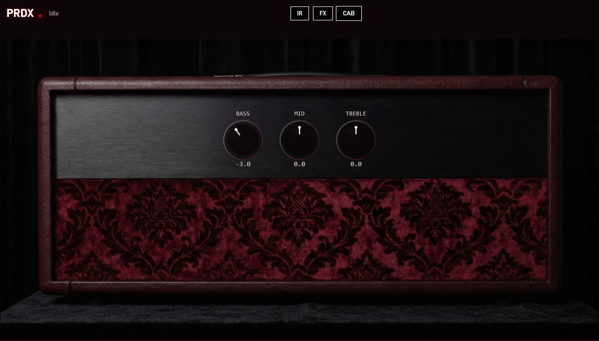

cs student. cloud and networking. builds things.
Hi, I'm Kevin. I'm finishing my CS degree at UNC Charlotte (class of 2027) and going into cloud and network engineering. I'm working on my CCNA right now, with AWS after that.
It started with Minecraft. As a kid I wanted to run a server for me and my cousin, so I looked up tutorials and tried opening the ports on our router. When that got complicated I found Hamachi and got it working that way. I've been messing with this stuff ever since.
People usually come to me when something on their computer won't work, and I like helping them figure it out. I've also mentored students learning to code at the Dottie Rose Foundation. I speak English and Spanish, and I play guitar, which is where PRDX came from.
Looking for: cloud, network or infrastructure work, in Charlotte or remote.
| Certification | Status |
|---|---|
| Cisco CCNA | Studying now |
| AWS certification | Up next |
| Microsoft MTA: Python, Java, JavaScript, Software Development Fundamentals | Passed |

An amp sim I built for a class, with an ambient focus: spatial reverb and stereo widening, on top of IR loading, gating, EQ and distortion.
A remote control panel for managing server processes, with state checks and safe start and stop actions.
Building one out alongside the server manager. I'll write up the setup here as it comes together.
Hands-on labs on routing, subnetting and working through network problems step by step.
Email: contact@acru.dev
LinkedIn: linkedin.com/in/kevinalvaradocruz
GitHub: github.com/KevinAcruz